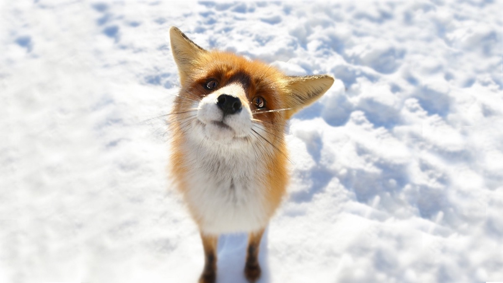

Vulpița
Tot urla a pagubă
De trei zile n-a mâncat
Nimeni în seamă n-o bagă
Și-o apucă-un leșinat
Un cocoș ce n-avea minte
Venea spre ea curios
Vulpea nu a stat cuminte
Vrând să-i fie de folos
Însă câinele a observat
Și spre vulpe a fugit
Iar cocoșul fericit
Lui Grivei i-a mulțumit!
Vasile Groza